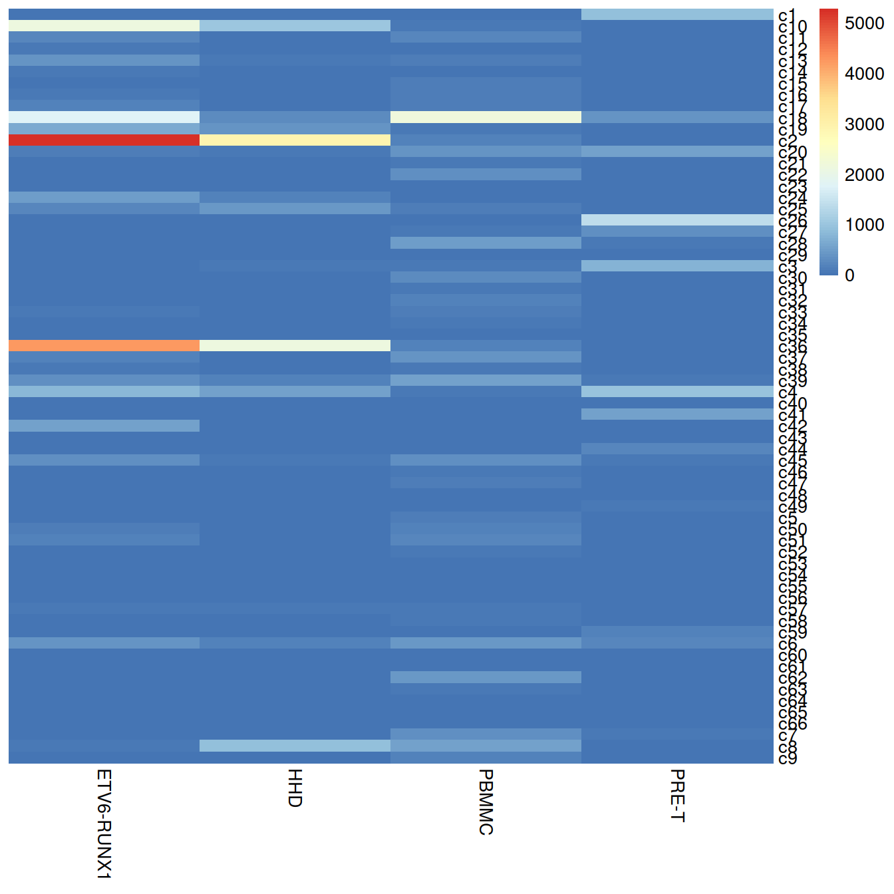
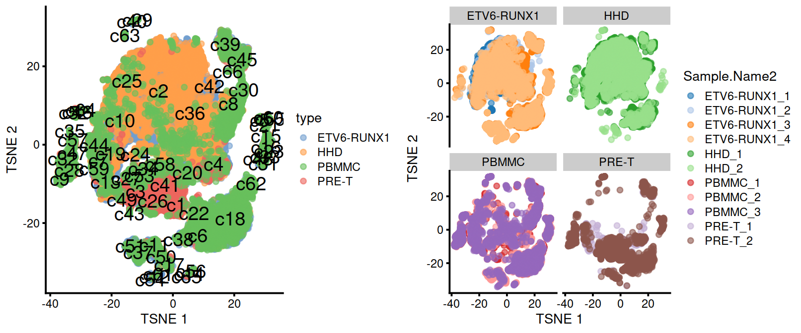
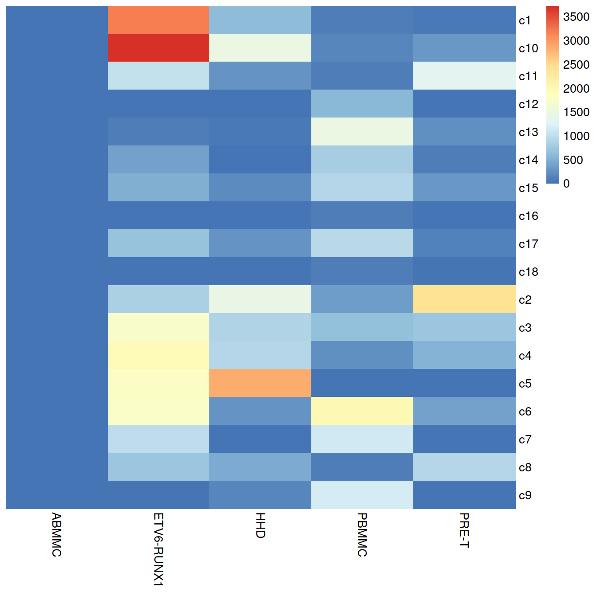
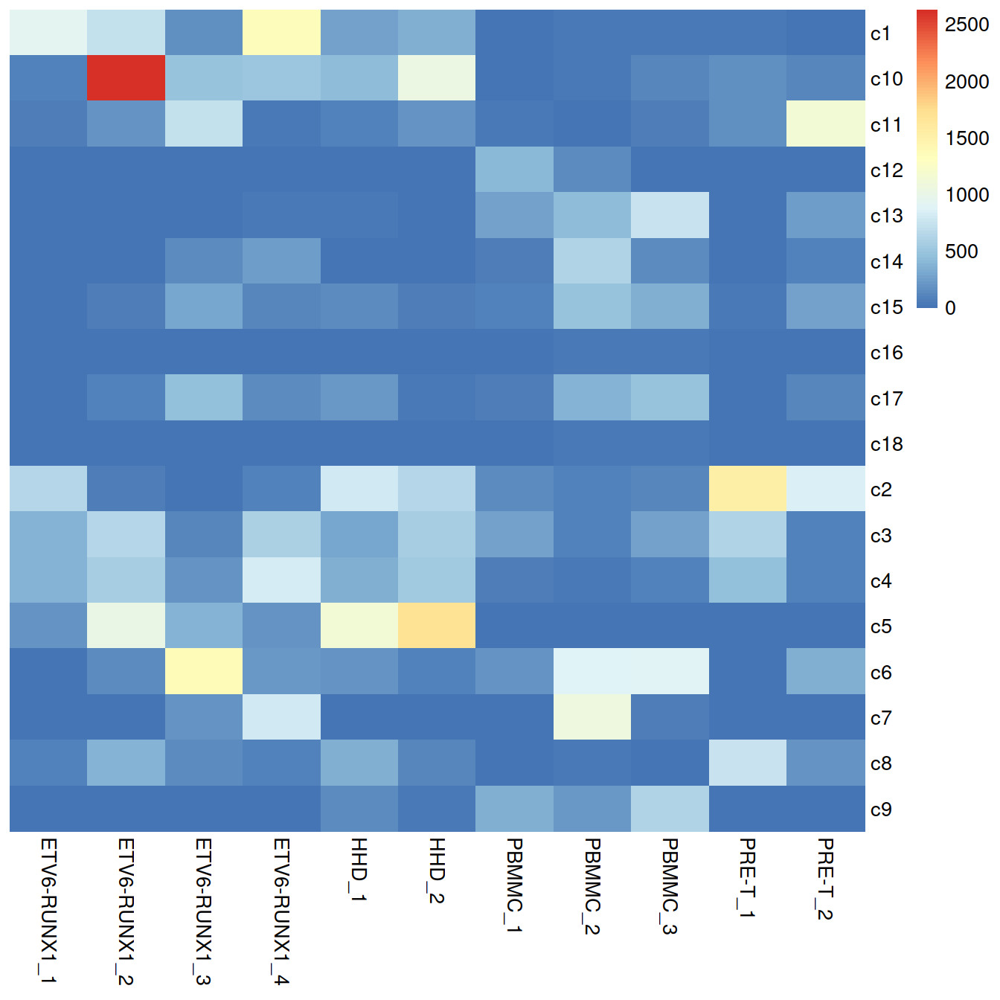
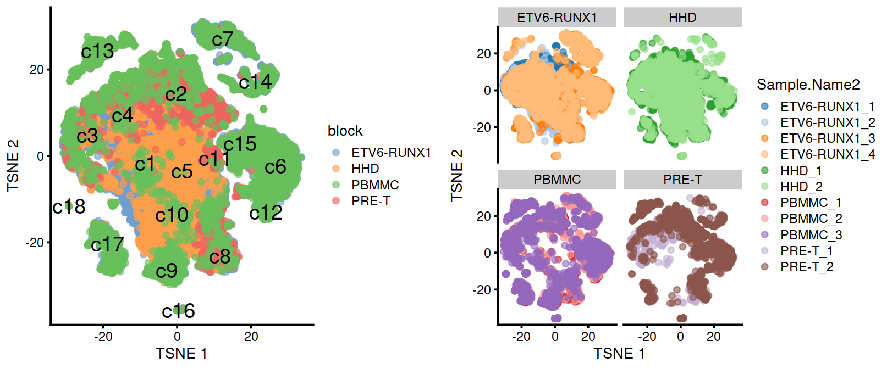
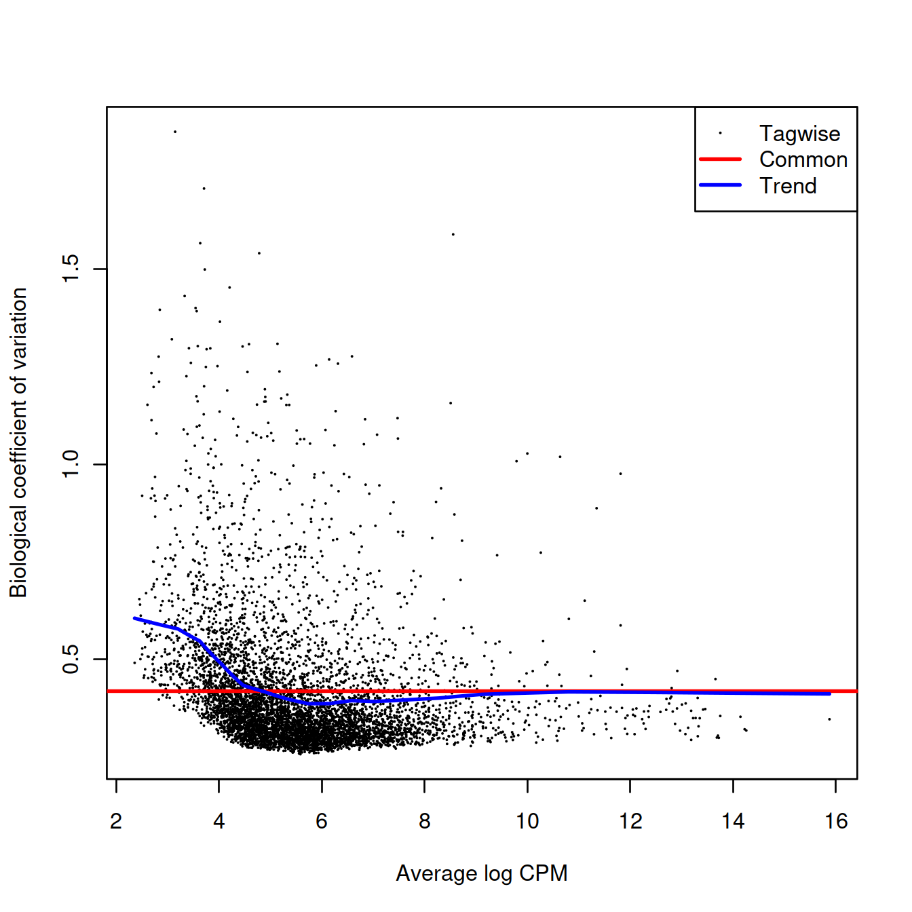
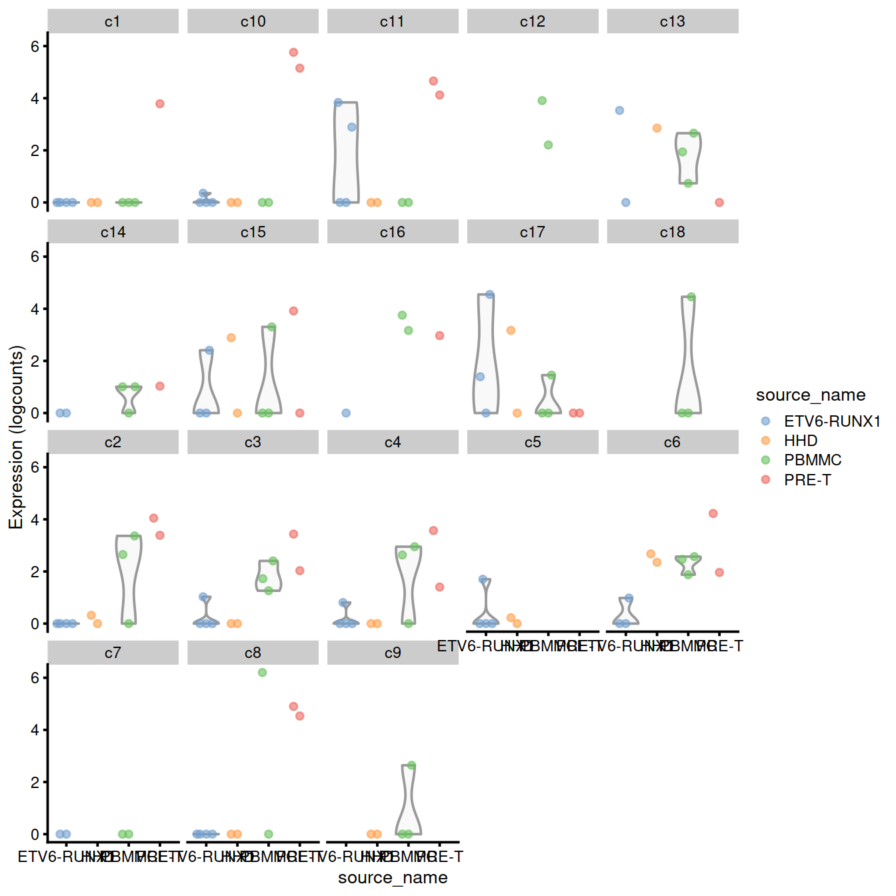
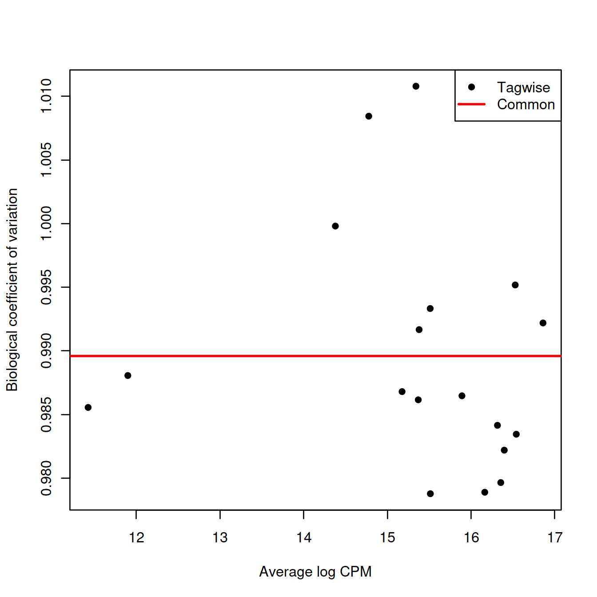
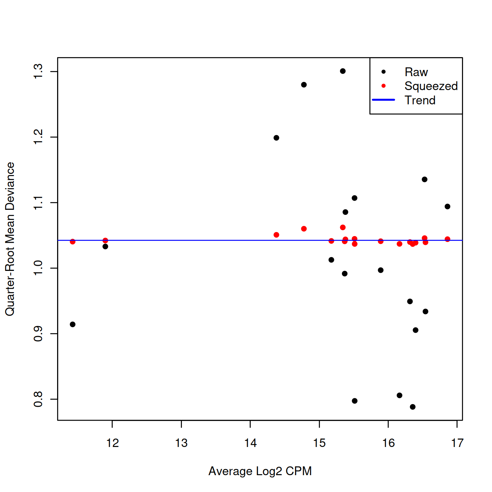

Chapter 23 Differential expression and abundance between conditions
Source: Multi-sample comparisons of the OSCA book.
23.1 Motivation
A powerful use of scRNA-seq technology lies in the design of replicated multi-condition experiments to detect changes in composition or expression between conditions. For example, a researcher could use this strategy to detect changes in cell type abundance after drug treatment (Richard et al. 2018) or genetic modifications (Scialdone et al. 2016). This provides more biological insight than conventional scRNA-seq experiments involving only one biological condition, especially if we can relate population changes to specific experimental perturbations.
Differential analyses of multi-condition scRNA-seq experiments can be broadly split into two categories - differential expression (DE) and differential abundance (DA) analyses. The former tests for changes in expression between conditions for cells of the same type that are present in both conditions, while the latter tests for changes in the composition of cell types (or states, etc.) between conditions.
23.2 Setting up the data
We will use the data set comprising the 11 samples (500 or 1000 cells per sample) analysed with fastMNN and the nested list of samples.
The differential analyses in this chapter will be predicated on many of the pre-processing steps covered previously. For brevity, we will not explicitly repeat them here, only noting that we have already merged cells from all samples into the same coordinate system and clustered the merged dataset to obtain a common partitioning across all samples.
Load the SCE object:
#setName <- "caron"
# Read object in:
##setSuf <- "_1kCellPerSpl"
##tmpFn <- sprintf("%s/%s/Robjects/%s_sce_nz_postDeconv%s_clustered.Rds", projDir, outDirBit, setName, setSuf)
#setSuf <- "_1kCps"
tmpFn <- sprintf("%s/%s/Robjects/%s_sce_nz_postDeconv%s_Fmwbl.Rds", projDir, outDirBit, setName, setSuf)
print(tmpFn)## [1] "/ssd/personal/baller01/20200511_FernandesM_ME_crukBiSs2020/AnaWiSce/AnaKmWiC/Robjects/caron_sce_nz_postDeconv_allCells_Fmwbl.Rds"## class: SingleCellExperiment
## dim: 12466 47830
## metadata(2): merge.info pca.info
## assays(1): reconstructed
## rownames(12466): ENSG00000000003 ENSG00000000457 ... ENSG00000285476
## ENSG00000285492
## rowData names(1): rotation
## colnames: NULL
## colData names(22): Sample Barcode ... type clusters.mnn
## reducedDimNames(2): corrected TSNE
## altExpNames(0):A brief inspection of the results shows clusters contain varying contributions from batches:
##
## ETV6-RUNX1 HHD PBMMC PRE-T
## c1 3 2 6 904
## c10 2110 1019 102 21
## c11 212 7 235 17
## c12 88 1 6 0
## c13 385 92 112 17
## c14 89 2 20 1
## c15 37 1 143 21
## c16 59 4 138 14
## c17 164 3 125 6
## c18 1745 295 2169 372
## c19 649 418 65 30
## c2 5272 2952 190 12
## c20 125 81 410 548
## c21 6 1 55 17
## c22 30 18 318 49
## c23 38 0 7 0
## c24 475 206 42 34
## c25 231 466 141 22
## c26 1 2 23 1372
## c27 2 16 85 348
## c28 5 4 491 89
## c29 16 2 48 12
## c3 18 58 76 760
## c30 3 1 270 2
## c31 41 0 70 0
## c32 4 0 199 25
## c33 59 4 140 0
## c34 0 0 80 15
## c35 4 1 20 3
## c36 4250 2137 203 6
## c37 164 4 391 9
## c38 83 52 100 28
## c39 363 167 529 75
## c4 798 575 63 998
## c40 19 6 33 14
## c41 0 1 7 554
## c42 532 43 3 0
## c43 10 2 26 4
## c44 1 15 30 260
## c45 329 96 327 62
## c46 1 2 74 5
## c47 3 1 140 52
## c48 5 3 18 3
## c49 3 4 20 100
## c5 13 0 127 9
## c50 117 9 171 15
## c51 161 1 217 1
## c52 1 2 99 3
## c53 27 1 24 4
## c54 49 0 0 0
## c55 2 0 48 1
## c56 20 0 26 0
## c57 55 54 103 33
## c58 7 19 78 6
## c59 8 16 45 184
## c6 414 167 457 223
## c60 2 1 23 3
## c61 40 0 1 0
## c62 2 0 439 2
## c63 1 1 80 4
## c64 0 0 26 0
## c65 26 0 0 1
## c66 8 1 30 0
## c7 40 51 352 67
## c8 61 900 579 4
## c9 2 1 210 28pheatmap::pheatmap(tab,
border_color = NA,
drop_levels = TRUE,
cluster_rows = FALSE,
cluster_cols = FALSE
)
tab <- table(colLabels(sce), sce$Sample.Name2)
pheatmap::pheatmap(tab,
border_color = NA,
drop_levels = TRUE,
cluster_rows = FALSE,
cluster_cols = FALSE
)
On the t-SNE plots below, cells colored by type or sample (‘batch of origin’). Cluster numbers are superimposed based on the median coordinate of cells assigned to that cluster.
p1 <- plotTSNE(sce, colour_by="type", text_by="label")
p2 <- plotTSNE(sce, colour_by="Sample.Name2")
gridExtra::grid.arrange(p1, p2+facet_wrap(~colData(sce)$type), ncol=2)
tmpFn <- sprintf("%s/%s/Robjects/%s_sce_nz_postDeconv%s_Fmwbl2.Rds", projDir, outDirBit, setName, setSuf)
tmpList <- readRDS(tmpFn)
chosen.hvgs <- tmpList$chosen.hvgs
rescaled.mbn <- tmpList$rescaled.mbn
uncorrected <- tmpList$uncorrected
colToKeep <- c("Run", "Sample.Name", "source_name", "block", "setName", "Sample.Name2")
colData(uncorrected) <- colData(uncorrected)[,colToKeep]
colData(uncorrected)[1:3,]## DataFrame with 3 rows and 6 columns
## Run Sample.Name source_name block setName Sample.Name2
## <character> <character> <factor> <factor> <character> <character>
## 1 SRR9264343 GSM3872434 ETV6-RUNX1 ETV6-RUNX1 Caron ETV6-RUNX1_1
## 2 SRR9264343 GSM3872434 ETV6-RUNX1 ETV6-RUNX1 Caron ETV6-RUNX1_1
## 3 SRR9264343 GSM3872434 ETV6-RUNX1 ETV6-RUNX1 Caron ETV6-RUNX1_1#--- merging ---#
library(batchelor)
set.seed(01001001)
merged <- correctExperiments(uncorrected,
batch=uncorrected$Sample.Name2,
subset.row=chosen.hvgs,
PARAM=FastMnnParam(
merge.order=list( list(1,2,3,4), list(9,10,11), list(5,6), list(7,8) )
)
)
merged## class: SingleCellExperiment
## dim: 12466 47830
## metadata(2): merge.info pca.info
## assays(3): reconstructed counts logcounts
## rownames(12466): ENSG00000000003 ENSG00000000457 ... ENSG00000285476
## ENSG00000285492
## rowData names(12): rotation ensembl_gene_id ... detected gene_sparsity
## colnames: NULL
## colData names(7): batch Run ... setName Sample.Name2
## reducedDimNames(4): corrected PCA TSNE UMAP
## altExpNames(0):#--- clustering ---#
g <- buildSNNGraph(merged, use.dimred="corrected")
clusters <- igraph::cluster_louvain(g)
merged$clusters.mnn <- factor(paste0("c", clusters$membership))
#colLabels(merged) <- merged$clusters.mnn
#--- dimensionality-reduction ---#
merged <- runTSNE(merged, dimred="corrected", external_neighbors=TRUE)
merged <- runUMAP(merged, dimred="corrected", external_neighbors=TRUE)
library(scater)
tab <- table(merged$clusters.mnn, merged$block)
pheatmap::pheatmap(tab,
border_color = NA,
drop_levels = TRUE,
cluster_rows = FALSE,
cluster_cols = FALSE
)
tab <- table(merged$clusters.mnn, merged$Sample.Name2)
pheatmap::pheatmap(tab,
border_color = NA,
drop_levels = TRUE,
cluster_rows = FALSE,
cluster_cols = FALSE
)
#plotTSNE(merged, colour_by="block", text_by="clusters.mnn")
#plotTSNE(merged, colour_by="Sample.Name2")p1 <- plotTSNE(merged, colour_by="block", text_by="clusters.mnn")
p2 <- plotTSNE(merged, colour_by="Sample.Name2")
gridExtra::grid.arrange(p1, p2+facet_wrap(~colData(sce)$type), ncol=2)
23.3 Differential expression between conditions
23.3.1 Creating pseudo-bulk samples
The most obvious differential analysis is to look for changes in expression between conditions. We perform the DE analysis separately for each label. The actual DE testing is performed on “pseudo-bulk” expression profiles (Tung et al. 2017), generated by summing counts together for all cells with the same combination of label and sample. This leverages the resolution offered by single-cell technologies to define the labels, and combines it with the statistical rigor of existing methods for DE analyses involving a small number of samples.
# Using 'label' and 'sample' as our two factors; each column of the output
# corresponds to one unique combination of these two factors.
summed <- aggregateAcrossCells(merged,
id = DataFrame(
label=merged$clusters.mnn,
sample=merged$Sample.Name2
)
)
summed## class: SingleCellExperiment
## dim: 12466 187
## metadata(2): merge.info pca.info
## assays(1): counts
## rownames(12466): ENSG00000000003 ENSG00000000457 ... ENSG00000285476
## ENSG00000285492
## rowData names(12): rotation ensembl_gene_id ... detected gene_sparsity
## colnames: NULL
## colData names(11): batch Run ... sample ncells
## reducedDimNames(4): corrected PCA TSNE UMAP
## altExpNames(0):## DataFrame with 3 rows and 11 columns
## batch Run Sample.Name source_name block setName
## <character> <character> <character> <factor> <factor> <character>
## 1 ETV6-RUNX1_1 SRR9264343 GSM3872434 ETV6-RUNX1 ETV6-RUNX1 Caron
## 2 ETV6-RUNX1_2 SRR9264344 GSM3872435 ETV6-RUNX1 ETV6-RUNX1 Caron
## 3 ETV6-RUNX1_3 SRR9264345 GSM3872436 ETV6-RUNX1 ETV6-RUNX1 Caron
## Sample.Name2 clusters.mnn label sample ncells
## <character> <factor> <factor> <character> <integer>
## 1 ETV6-RUNX1_1 c1 c1 ETV6-RUNX1_1 937
## 2 ETV6-RUNX1_2 c1 c1 ETV6-RUNX1_2 722
## 3 ETV6-RUNX1_3 c1 c1 ETV6-RUNX1_3 165At this point, it is worth reflecting on the motivations behind the use of pseudo-bulking:
Larger counts are more amenable to standard DE analysis pipelines designed for bulk RNA-seq data. Normalization is more straightforward and certain statistical approximations are more accurate e.g., the saddlepoint approximation for quasi-likelihood methods or normality for linear models. Collapsing cells into samples reflects the fact that our biological replication occurs at the sample level (Lun and Marioni 2017). Each sample is represented no more than once for each condition, avoiding problems from unmodelled correlations between samples. Supplying the per-cell counts directly to a DE analysis pipeline would imply that each cell is an independent biological replicate, which is not true from an experimental perspective. (A mixed effects model can handle this variance structure but involves extra statistical and computational complexity for little benefit, see Crowell et al. (2019).) Variance between cells within each sample is masked, provided it does not affect variance across (replicate) samples. This avoids penalizing DEGs that are not uniformly up- or down-regulated for all cells in all samples of one condition. Masking is generally desirable as DEGs - unlike marker genes - do not need to have low within-sample variance to be interesting, e.g., if the treatment effect is consistent across replicate populations but heterogeneous on a per-cell basis. (Of course, high per-cell variability will still result in weaker DE if it affects the variability across populations, while homogeneous per-cell responses will result in stronger DE due to a larger population-level log-fold change. These effects are also largely desirable.)
23.3.2 Performing the DE analysis
23.3.2.1 Introduction
The DE analysis will be performed using quasi-likelihood (QL) methods from the edgeR package (Robinson, McCarthy, and Smyth 2010; Chen, Lun, and Smyth 2016). This uses a negative binomial generalized linear model (NB GLM) to handle overdispersed count data in experiments with limited replication. In our case, we have biological variation with three paired replicates per condition, so edgeR (or its contemporaries) is a natural choice for the analysis.
We do not use all labels for GLM fitting as the strong DE between labels makes it difficult to compute a sensible average abundance to model the mean-dispersion trend. Moreover, label-specific batch effects would not be easily handled with a single additive term in the design matrix for the batch. Instead, we arbitrarily pick one of the labels to use for this demonstration.
labelToGet <- "c1"
current <- summed[,summed$label==labelToGet]
# Creating up a DGEList object for use in edgeR:
suppressMessages(library(edgeR))
y <- DGEList(counts(current), samples=colData(current))
y## An object of class "DGEList"
## $counts
## Sample1 Sample2 Sample3 Sample4 Sample5 Sample6 Sample7 Sample8
## ENSG00000000003 0 1 0 0 0 2 0 0
## ENSG00000000457 25 24 2 43 4 6 0 1
## ENSG00000000938 0 0 0 0 2 0 0 1
## ENSG00000001167 31 43 13 87 1 29 2 3
## ENSG00000001461 71 16 2 37 15 31 0 1
## Sample9 Sample10 Sample11
## ENSG00000000003 0 2 0
## ENSG00000000457 0 0 0
## ENSG00000000938 1 1 0
## ENSG00000001167 4 5 0
## ENSG00000001461 0 1 0
## 12461 more rows ...
##
## $samples
## group lib.size norm.factors batch Run Sample.Name
## Sample1 1 2399260 1 ETV6-RUNX1_1 SRR9264343 GSM3872434
## Sample2 1 1158608 1 ETV6-RUNX1_2 SRR9264344 GSM3872435
## Sample3 1 289586 1 ETV6-RUNX1_3 SRR9264345 GSM3872436
## Sample4 1 2161489 1 ETV6-RUNX1_4 SRR9264346 GSM3872437
## Sample5 1 773606 1 HHD_1 SRR9264347 GSM3872438
## source_name block setName Sample.Name2 clusters.mnn label
## Sample1 ETV6-RUNX1 ETV6-RUNX1 Caron ETV6-RUNX1_1 c1 c1
## Sample2 ETV6-RUNX1 ETV6-RUNX1 Caron ETV6-RUNX1_2 c1 c1
## Sample3 ETV6-RUNX1 ETV6-RUNX1 Caron ETV6-RUNX1_3 c1 c1
## Sample4 ETV6-RUNX1 ETV6-RUNX1 Caron ETV6-RUNX1_4 c1 c1
## Sample5 HHD HHD Caron HHD_1 c1 c1
## sample ncells
## Sample1 ETV6-RUNX1_1 937
## Sample2 ETV6-RUNX1_2 722
## Sample3 ETV6-RUNX1_3 165
## Sample4 ETV6-RUNX1_4 1363
## Sample5 HHD_1 276
## 6 more rows ...23.3.2.2 Pre-processing
A typical step in bulk RNA-seq data analyses is to remove samples with very low library sizes due to failed library preparation or sequencing. The very low counts in these samples can be troublesome in downstream steps such as normalization (Chapter 7) or for some statistical approximations used in the DE analysis. In our situation, this is equivalent to removing label-sample combinations that have very few or lowly-sequenced cells. The exact definition of “very low” will vary, but in this case, we remove combinations containing fewer than 20 cells (Crowell et al. 2019). Alternatively, we could apply the outlier-based strategy described in Chapter 6, but this makes the strong assumption that all label-sample combinations have similar numbers of cells that are sequenced to similar depth.
## Mode FALSE TRUE
## logical 10 1Another typical step in bulk RNA-seq analyses is to remove genes that are lowly expressed. This reduces computational work, improves the accuracy of mean-variance trend modelling and decreases the severity of the multiple testing correction. Genes are discarded if they are not expressed above a log-CPM threshold in a minimum number of samples (determined from the size of the smallest treatment group in the experimental design).
## Mode FALSE TRUE
## logical 6478 5988Finally, we correct for composition biases by computing normalization factors with the trimmed mean of M-values method (Robinson and Oshlack 2010). We do not need the bespoke single-cell methods described in Chapter 7, as the counts for our pseudo-bulk samples are large enough to apply bulk normalization methods. (Readers should be aware that edgeR normalization factors are closely related but not the same as the size factors described elsewhere in this book.)
## group lib.size norm.factors batch Run Sample.Name
## Sample1 1 2399260 0.7743944 ETV6-RUNX1_1 SRR9264343 GSM3872434
## Sample2 1 1158608 0.9666536 ETV6-RUNX1_2 SRR9264344 GSM3872435
## Sample3 1 289586 0.9940259 ETV6-RUNX1_3 SRR9264345 GSM3872436
## Sample4 1 2161489 0.8767754 ETV6-RUNX1_4 SRR9264346 GSM3872437
## Sample5 1 773606 0.6914457 HHD_1 SRR9264347 GSM3872438
## Sample6 1 1117032 0.8861710 HHD_2 SRR9264348 GSM3872439
## Sample7 1 37637 1.1549506 PBMMC_1 SRR9264351 GSM3872442
## Sample8 1 45151 1.3305647 PBMMC_2 SRR9264353 GSM3872443
## Sample9 1 37099 1.2773938 PBMMC_3 SRR9264354 GSM3872444
## Sample10 1 66418 1.2743275 PRE-T_1 SRR9264349 GSM3872440
## source_name block setName Sample.Name2 clusters.mnn label
## Sample1 ETV6-RUNX1 ETV6-RUNX1 Caron ETV6-RUNX1_1 c1 c1
## Sample2 ETV6-RUNX1 ETV6-RUNX1 Caron ETV6-RUNX1_2 c1 c1
## Sample3 ETV6-RUNX1 ETV6-RUNX1 Caron ETV6-RUNX1_3 c1 c1
## Sample4 ETV6-RUNX1 ETV6-RUNX1 Caron ETV6-RUNX1_4 c1 c1
## Sample5 HHD HHD Caron HHD_1 c1 c1
## Sample6 HHD HHD Caron HHD_2 c1 c1
## Sample7 PBMMC PBMMC Caron PBMMC_1 c1 c1
## Sample8 PBMMC PBMMC Caron PBMMC_2 c1 c1
## Sample9 PBMMC PBMMC Caron PBMMC_3 c1 c1
## Sample10 PRE-T PRE-T Caron PRE-T_1 c1 c1
## sample ncells
## Sample1 ETV6-RUNX1_1 937
## Sample2 ETV6-RUNX1_2 722
## Sample3 ETV6-RUNX1_3 165
## Sample4 ETV6-RUNX1_4 1363
## Sample5 HHD_1 276
## Sample6 HHD_2 345
## Sample7 PBMMC_1 26
## Sample8 PBMMC_2 27
## Sample9 PBMMC_3 41
## Sample10 PRE-T_1 3723.3.2.3 Statistical modelling
Our aim is to test whether the log-fold change between sample groups is significantly different from zero.
## (Intercept) factor(source_name)HHD factor(source_name)PBMMC
## Sample1 1 0 0
## Sample2 1 0 0
## Sample3 1 0 0
## Sample4 1 0 0
## Sample5 1 1 0
## Sample6 1 1 0
## Sample7 1 0 1
## Sample8 1 0 1
## Sample9 1 0 1
## Sample10 1 0 0
## factor(source_name)PRE-T
## Sample1 0
## Sample2 0
## Sample3 0
## Sample4 0
## Sample5 0
## Sample6 0
## Sample7 0
## Sample8 0
## Sample9 0
## Sample10 1
## attr(,"assign")
## [1] 0 1 1 1
## attr(,"contrasts")
## attr(,"contrasts")$`factor(source_name)`
## [1] "contr.treatment"We estimate the negative binomial (NB) dispersions with estimateDisp(). The role of the NB dispersion is to model the mean-variance trend, which is not easily accommodated by QL dispersions alone due to the quadratic nature of the NB mean-variance trend.
## Min. 1st Qu. Median Mean 3rd Qu. Max.
## 0.1498 0.1546 0.1639 0.1843 0.1876 0.3670Biological coefficient of variation (BCV) for each gene as a function of the average abundance. The BCV is computed as the square root of the NB dispersion after empirical Bayes shrinkage towards the trend. Trended and common BCV estimates are shown in blue and red, respectively.

We also estimate the quasi-likelihood dispersions with glmQLFit() (Chen, Lun, and Smyth 2016). This fits a GLM to the counts for each gene and estimates the QL dispersion from the GLM deviance. We set robust=TRUE to avoid distortions from highly variable clusters (Phipson et al. 2016). The QL dispersion models the uncertainty and variability of the per-gene variance - which is not well handled by the NB dispersions, so the two dispersion types complement each other in the final analysis.
## Min. 1st Qu. Median Mean 3rd Qu. Max.
## 0.4648 0.7190 0.8145 0.8089 0.8702 1.2078## Min. 1st Qu. Median Mean 3rd Qu. Max.
## 0.3833 10.1200 10.1200 9.5004 10.1200 10.1200QL dispersion estimates for each gene as a function of abundance. Raw estimates (black) are shrunk towards the trend (blue) to yield squeezed estimates (red).

We test for differences in expression due to sample group using glmQLFTest(). DEGs are defined as those with non-zero log-fold changes at a false discovery rate of 5%. If very few genes are significantly DE that sample group has little effect on the transcriptome.
## factor(source_name)PRE-T
## Down 186
## NotSig 5726
## Up 76topTab <- topTags(res)$table
tmpAnnot <- rowData(current)[,c("ensembl_gene_id","Symbol")] %>% data.frame
topTab %>% tibble::rownames_to_column("ensembl_gene_id") %>%
left_join(tmpAnnot, by="ensembl_gene_id")## ensembl_gene_id logFC logCPM F PValue FDR
## 1 ENSG00000137731 11.750497 8.081049 200.14071 1.137048e-09 6.808645e-06
## 2 ENSG00000100721 -14.574197 11.841139 86.06404 7.246895e-08 2.169720e-04
## 3 ENSG00000019582 -7.293701 13.419485 75.91130 1.699885e-07 3.392971e-04
## 4 ENSG00000030419 5.108326 4.324652 60.99556 7.199543e-07 9.130830e-04
## 5 ENSG00000204287 -5.991293 12.828441 60.45677 7.624274e-07 9.130830e-04
## 6 ENSG00000229989 3.928677 7.844280 57.24178 1.082802e-06 1.080637e-03
## 7 ENSG00000081189 -5.661665 9.823323 55.76542 1.278801e-06 1.093923e-03
## 8 ENSG00000272398 -7.136564 10.987138 53.63986 1.635052e-06 1.210049e-03
## 9 ENSG00000128218 -5.479618 11.067708 52.73912 1.818710e-06 1.210049e-03
## 10 ENSG00000100629 4.635353 4.820067 49.53548 2.687517e-06 1.422310e-03
## Symbol
## 1 FXYD2
## 2 TCL1A
## 3 CD74
## 4 IKZF2
## 5 HLA-DRA
## 6 MIR181A1HG
## 7 MEF2C
## 8 CD24
## 9 VPREB3
## 10 CEP12823.3.2.4 Differential expression for each cluster
The steps illustrated above with cluster c1 are now repeated for each cluster:
- Subset pseudo-bulk counts for that cluster
- Create edgeR object with these pseudo-bulk counts
- Pre-process
- Remove samples with very small library size
- Remove genes with low UMI counts
- Correct for compositional bias
- Perform differential expression analysis
- Estimate negative binomial dispersion
- Estimate quasi-likelihood dispersion
- Test for differential expression
de.results <- list()
for (labelToGet in levels(summed$label)) {
current <- summed[,summed$label==labelToGet]
y <- DGEList(counts(current), samples=colData(current))
discarded <- isOutlier(colSums(counts(current)), log=TRUE, type="lower")
y <- y[,!discarded]
y <- y[filterByExpr(y, group=current$source_name),]
y <- calcNormFactors(y)
design <- try(
model.matrix(~factor(source_name), y$samples),
silent=TRUE
)
if (is(design, "try-error") ||
qr(design)$rank==nrow(design) ||
qr(design)$rank < ncol(design))
{
# Skipping labels without contrasts or without
# enough residual d.f. to estimate the dispersion.
next
}
y <- estimateDisp(y, design)
fit <- glmQLFit(y, design)
res <- glmQLFTest(fit, coef=ncol(design))
de.results[[labelToGet]] <- res
}23.3.2.4.1 Number of DEGs by cluster and direction
We examine the numbers of DEGs at a FDR of 5% for each label (i.e. cluster). In general, there seems to be very little differential expression between the on and off conditions.
summaries <- lapply(de.results, FUN=function(x) summary(decideTests(x))[,1])
sum.tab <- do.call(rbind, summaries)
#sum.tab
sum.tab[order(rownames(sum.tab)),] %>%
as.data.frame() %>%
tibble::rownames_to_column("Cluster") %>%
datatable(rownames = FALSE, options = list(pageLength = 20, scrollX = TRUE))23.3.2.4.2 List of DEGs
We now list DEGs and the number of clusters they were detected in:
degs <- lapply(de.results, FUN=function(x) rownames(topTags(x, p.value=0.05)))
common.degs <- sort(table(unlist(degs)), decreasing=TRUE)
#head(common.degs, 20)
common.degs %>%
as.data.frame %>%
dplyr::rename(ensembl_gene_id = Var1, NbClu = Freq) %>%
left_join(
data.frame(rowData(summed)[,c("ensembl_gene_id", "Symbol")]),
by="ensembl_gene_id") %>%
#rename(Gene = ensembl_gene_id) %>%
relocate(c("Symbol","NbClu","ensembl_gene_id")) %>%
datatable(rownames = FALSE, options = list(pageLength = 20, scrollX = TRUE))23.3.2.4.3 Number of clusters skipped
“We also list the labels that were skipped due to the absence of replicates or contrasts. If it is necessary to extract statistics in the absence of replicates, several strategies can be applied such as reducing the complexity of the model or using a predefined value for the NB dispersion. We refer readers to the edgeR user’s guide for more details.”
The number of clusters skipped is 0.
grmToShowList <- vector("list", length = nlevels(merged$clusters.mnn))
names(grmToShowList) <- levels(merged$clusters.mnn)
genesToExclude <- c()
nbGeneToShow <- 20
#degs <- lapply(de.results, FUN=function(x) (topTags(x, p.value=0.05)))
degs <- lapply(de.results, FUN=function(x) (as.data.frame(topTags(x, n=nbGeneToShow))))
for( namex in levels(merged$clusters.mnn) )
{
nbGeneToUse <- min(c(nrow(degs[[namex]]), nbGeneToShow))
# format
# format p value:
tmpCol <- grep("PValue|FDR", colnames(degs[[namex]]), value=TRUE)
degs[[namex]][,tmpCol] <- apply(degs[[namex]][,tmpCol],
2,
function(x){format(x, scientific = TRUE, digits = 1)})
# format logFC:
tmpCol <- c("logFC", "logCPM", "F")
degs[[namex]][,tmpCol] <- apply(degs[[namex]][,tmpCol], 2, function(x){round(x, 2)})
rm(tmpCol)
# subset data
grmToShow <- degs[[namex]] %>%
as.data.frame() %>%
tibble::rownames_to_column("gene") %>%
arrange(FDR, desc(abs(logFC))) %>%
filter(! gene %in% genesToExclude) %>%
group_modify(~ head(.x, nbGeneToUse))
# keep data
grmToShow$cluster <- namex
grmToShowList[[namex]] <- grmToShow
# tidy
rm(nbGeneToUse)
}
grmToShowDf <- do.call("rbind", grmToShowList)
tmpCol <- c("cluster", "gene")
grmToShowDf %>%
select(tmpCol, setdiff(colnames(grmToShowDf), tmpCol)) %>%
filter(gene %in% names(common.degs) & as.numeric(FDR) < 0.05) %>%
datatable(rownames = FALSE, filter="top", options=list(scrollX = TRUE, pageLength = 15))23.3.3 Putting it all together
Now that we have laid out the theory underlying the DE analysis, we repeat this process for each of the labels. This is conveniently done using the pseudoBulkDGE() function from scran, which will loop over all labels and apply the exact analysis described above to each label. To prepare for this, we filter out all sample-label combinations with insufficient cells.
We construct a common design matrix that will be used in the analysis for each label. Recall that this matrix should have one row per unique sample (and named as such), reflecting the fact that we are modelling counts on the sample level instead of the cell level.
# Pulling out a sample-level 'targets' data.frame:
targets <- colData(merged)[!duplicated(merged$Sample.Name2),]
# Constructing the design matrix:
design <- model.matrix(~factor(source_name), data=targets)
rownames(design) <- targets$Sample.Name2We then apply the pseudoBulkDGE() function to obtain a list of DE genes for each label. This function puts some additional effort into automatically dealing with labels that are not represented in all sample groups, for which a DE analysis between conditions is meaningless; or are not represented in a sufficient number of replicate samples to enable modelling of biological variability.
library(scran)
de.results <- pseudoBulkDGE(summed.filt,
sample=summed.filt$Sample.Name2,
label=summed.filt$label,
design=design,
coef=ncol(design),
# 'condition' sets the group size for filterByExpr(),
# to perfectly mimic our previous manual analysis.
condition=targets$source_name
)We examine the numbers of DEGs at a FDR of 5% for each label using the decideTestsPerLabel() function. Note that genes listed as NA were either filtered out as low-abundance genes for a given label’s analysis, or the comparison of interest was not possible for a particular label, e.g., due to lack of residual degrees of freedom or an absence of samples from both conditions.
## -1 0 1 NA
## c1 202 6786 91 5387
## c10 621 4186 429 7230
## c11 462 2763 355 8886
## c13 64 5309 206 6887
## c15 0 2829 0 9637
## c17 5 2056 20 10385
## c2 708 4033 508 7217
## c3 942 5766 701 5057
## c4 951 5396 705 5414
## c6 6 3701 12 8747
## c8 257 1764 156 10289For each gene, we compute the percentage of cell types in which that gene is upregulated or downregulated. (Here, we consider a gene to be non-DE if it is not retained after filtering.).
# Upregulated across most cell types.
up.de <- is.de > 0 & !is.na(is.de)
head(sort(rowMeans(up.de), decreasing=TRUE), 10)## ENSG00000081059 ENSG00000137731 ENSG00000064886 ENSG00000066294 ENSG00000096060
## 0.8181818 0.8181818 0.7272727 0.7272727 0.7272727
## ENSG00000136161 ENSG00000158488 ENSG00000159674 ENSG00000169994 ENSG00000182866
## 0.7272727 0.7272727 0.7272727 0.7272727 0.7272727# Downregulated across cell types.
down.de <- is.de < 0 & !is.na(is.de)
head(sort(rowMeans(down.de), decreasing=TRUE), 10)## ENSG00000110492 ENSG00000019582 ENSG00000068079 ENSG00000100721 ENSG00000105369
## 0.8181818 0.7272727 0.7272727 0.7272727 0.7272727
## ENSG00000120833 ENSG00000162654 ENSG00000184489 ENSG00000196126 ENSG00000197872
## 0.7272727 0.7272727 0.7272727 0.7272727 0.7272727We further identify label-specific DE genes that are significant in our label of interest yet not DE in any other label. As hypothesis tests are not typically geared towards identifying genes that are not DE, we use an ad hoc approach where we consider a gene to be consistent with the null hypothesis for a label if it fails to be detected even at a generous FDR threshold of 50%.
remotely.de <- decideTestsPerLabel(de.results, threshold=0.5)
not.de <- remotely.de==0 | is.na(remotely.de)
# first cluster in is.de
cx <- colnames(is.de)[1]
other.labels <- setdiff(colnames(not.de), cx)
unique.degs <- is.de[,cx]!=0 & rowMeans(not.de[,other.labels])==1
unique.degs <- names(which(unique.degs))
head(unique.degs)## character(0)# 2nd cluster in is.de
cx <- colnames(is.de)[2]
other.labels <- setdiff(colnames(not.de), cx)
unique.degs <- is.de[,cx]!=0 & rowMeans(not.de[,other.labels])==1
unique.degs <- names(which(unique.degs))# Choosing the top-ranked gene for inspection:
de.inspec <- list()
de.inspec[[cx]] <- de.results[[cx]]
de.inspec[[cx]] <- de.inspec[[cx]][order(de.inspec[[cx]]$PValue),]
de.inspec[[cx]] <- de.inspec[[cx]][rownames(de.inspec[[cx]]) %in% unique.degs,]
sizeFactors(summed.filt) <- NULL
plotExpression(logNormCounts(summed.filt),
features=rownames(de.inspec[[cx]])[1],
x="source_name", colour_by="source_name",
other_fields="label") +
facet_wrap(~label)
We also list the labels that were skipped due to the absence of replicates or contrasts. If it is necessary to extract statistics in the absence of replicates, several strategies can be applied such as reducing the complexity of the model or using a predefined value for the NB dispersion. We refer readers to the edgeR user’s guide for more details.
## [1] "c12" "c14" "c16" "c18" "c5" "c7" "c9"23.4 Differential abundance between conditions
23.4.1 Overview
n a DA analysis, we test for significant changes in per-label cell abundance across conditions. This will reveal which cell types are depleted or enriched upon treatment, which is arguably just as interesting as changes in expression within each cell type. The DA analysis has a long history in flow cytometry (Finak et al. 2014; Lun, Richard, and Marioni 2017) where it is routinely used to examine the effects of different conditions on the composition of complex cell populations. By performing it here, we effectively treat scRNA-seq as a “super-FACS” technology for defining relevant subpopulations using the entire transcriptome.
We prepare for the DA analysis by quantifying the number of cells assigned to each label (or cluster).
abundances <- table(merged$clusters.mnn, merged$Sample.Name2)
abundances <- unclass(abundances)
head(abundances)##
## ETV6-RUNX1_1 ETV6-RUNX1_2 ETV6-RUNX1_3 ETV6-RUNX1_4 HHD_1 HHD_2 PBMMC_1
## c1 937 722 165 1363 276 345 26
## c10 103 2625 485 512 426 1042 9
## c11 72 196 713 52 96 191 28
## c12 0 0 11 7 3 1 396
## c13 1 7 24 43 52 12 288
## c14 3 3 135 253 1 15 64
##
## PBMMC_2 PBMMC_3 PRE-T_1 PRE-T_2
## c1 27 41 37 2
## c10 41 131 179 125
## c11 18 64 171 1142
## c12 152 13 2 2
## c13 435 748 6 246
## c14 611 142 2 96Performing the DA analysis
Our DA analysis will again be performed with the edgeR package. This allows us to take advantage of the NB GLM methods to model overdispersed count data in the presence of limited replication - except that the counts are not of reads per gene, but of cells per label (Lun, Richard, and Marioni 2017). The aim is to share information across labels to improve our estimates of the biological variability in cell abundance between replicates.
# Attaching some column metadata.
extra.info <- colData(merged)[match(colnames(abundances), merged$Sample.Name2),]
y.ab <- DGEList(abundances, samples=extra.info)
y.ab## An object of class "DGEList"
## $counts
##
## ETV6-RUNX1_1 ETV6-RUNX1_2 ETV6-RUNX1_3 ETV6-RUNX1_4 HHD_1 HHD_2 PBMMC_1
## c1 937 722 165 1363 276 345 26
## c10 103 2625 485 512 426 1042 9
## c11 72 196 713 52 96 191 28
## c12 0 0 11 7 3 1 396
## c13 1 7 24 43 52 12 288
##
## PBMMC_2 PBMMC_3 PRE-T_1 PRE-T_2
## c1 27 41 37 2
## c10 41 131 179 125
## c11 18 64 171 1142
## c12 152 13 2 2
## c13 435 748 6 246
## 13 more rows ...
##
## $samples
## group lib.size norm.factors batch Run Sample.Name
## ETV6-RUNX1_1 1 2853 1 ETV6-RUNX1_1 SRR9264343 GSM3872434
## ETV6-RUNX1_2 1 6615 1 ETV6-RUNX1_2 SRR9264344 GSM3872435
## ETV6-RUNX1_3 1 4727 1 ETV6-RUNX1_3 SRR9264345 GSM3872436
## ETV6-RUNX1_4 1 5293 1 ETV6-RUNX1_4 SRR9264346 GSM3872437
## HHD_1 1 4551 1 HHD_1 SRR9264347 GSM3872438
## source_name block setName Sample.Name2 clusters.mnn
## ETV6-RUNX1_1 ETV6-RUNX1 ETV6-RUNX1 Caron ETV6-RUNX1_1 c3
## ETV6-RUNX1_2 ETV6-RUNX1 ETV6-RUNX1 Caron ETV6-RUNX1_2 c4
## ETV6-RUNX1_3 ETV6-RUNX1 ETV6-RUNX1 Caron ETV6-RUNX1_3 c17
## ETV6-RUNX1_4 ETV6-RUNX1 ETV6-RUNX1 Caron ETV6-RUNX1_4 c1
## HHD_1 HHD HHD Caron HHD_1 c5
## 6 more rows ...We filter out low-abundance labels as previously described. This avoids cluttering the result table with very rare subpopulations that contain only a handful of cells. For a DA analysis of cluster abundances, filtering is generally not required as most clusters will not be of low-abundance (otherwise there would not have been enough evidence to define the cluster in the first place).
## Mode TRUE
## logical 18Unlike DE analyses, we do not perform an additional normalization step with calcNormFactors(). This means that we are only normalizing based on the “library size”, i.e., the total number of cells in each sample. Any changes we detect between conditions will subsequently represent differences in the proportion of cells in each cluster. The motivation behind this decision is discussed in more detail in Section 14.4.3.
Here, the log-fold change in our model refers to the change in cell abundance between sample groups, rather than the change in gene expression.
We use the estimateDisp() function to estimate the NB dipersion for each cluster. We turn off the trend as we do not have enough points for its stable estimation.
## Min. 1st Qu. Median Mean 3rd Qu. Max.
## 0.9793 0.9793 0.9793 0.9793 0.9793 0.9793
We repeat this process with the QL dispersion, again disabling the trend.
## Min. 1st Qu. Median Mean 3rd Qu. Max.
## 1.18 1.18 1.18 1.18 1.18 1.18## Min. 1st Qu. Median Mean 3rd Qu. Max.
## 120.9 212.5 212.5 199.0 212.5 212.5
We test for differences in abundance between sample groups using glmQLFTest().
## factor(source_name)PRE-T
## Down 2
## NotSig 16
## Up 0## Coefficient: factor(source_name)PRE-T
## logFC logCPM F PValue FDR
## c5 -5.970062 16.35445 10.1640813 0.001806486 0.03251675
## c1 -5.153475 16.31480 8.3152532 0.004624676 0.04162208
## c13 3.227077 15.51131 5.9376070 0.016218199 0.09730919
## c7 -3.936424 15.34103 5.0729830 0.026032057 0.11714426
## c18 3.386502 11.42393 3.4451433 0.065774025 0.23608559
## c2 2.301146 16.85892 3.1424598 0.078695196 0.23608559
## c8 1.788105 15.51327 1.9509604 0.164938752 0.37206264
## c11 1.736525 15.89057 1.8117349 0.180717038 0.37206264
## c10 -1.963157 16.53987 1.7680054 0.186031318 0.37206264
## c16 1.144352 11.89816 0.7203937 0.397624426 0.7157239723.4.2 Handling composition effects
23.4.2.1 Background
As mentioned above, we do not use calcNormFactors() in our default DA analysis. This normalization step assumes that most of the input features are not different between conditions. While this assumption is reasonable for most types of gene expression data, it is generally too strong for cell type abundance - most experiments consist of only a few cell types that may all change in abundance upon perturbation. Thus, our default approach is to only normalize based on the total number of cells in each sample, which means that we are effectively testing for differential proportions between conditions.
Unfortunately, the use of the total number of cells leaves us susceptible to composition effects. For example, a large increase in abundance for one cell subpopulation will introduce decreases in proportion for all other subpopulations - which is technically correct, but may be misleading if one concludes that those other subpopulations are decreasing in abundance of their own volition. If composition biases are proving problematic for interpretation of DA results, we have several avenues for removing them or mitigating their impact by leveraging a priori biological knowledge. 14.4.3.2 Assuming most labels do not change
If it is possible to assume that most labels (i.e., cell types) do not change in abundance, we can use calcNormFactors() to compute normalization factors.
## [1] 0.6775040 0.7238884 0.9769490 1.1290651 0.9268008 0.9656680 1.2257770
## [8] 1.4773071 1.4480029 0.7174753 1.0978745We then proceed with the remainder of the edgeR analysis, shown below in condensed format. A shift of positive log-fold changes towards zero is consistent with the removal of composition biases.
y.ab2 <- estimateDisp(y.ab2, design, trend="none")
fit.ab2 <- glmQLFit(y.ab2, design, robust=TRUE, abundance.trend=FALSE)
res2 <- glmQLFTest(fit.ab2, coef=ncol(design))
topTags(res2, n=10)## Coefficient: factor(source_name)PRE-T
## logFC logCPM F PValue FDR
## c5 -6.274363 16.53184 10.3342094 0.001658929 0.02986073
## c1 -5.017465 16.56753 7.6891289 0.006399471 0.05759524
## c13 3.118403 15.14410 5.4457475 0.021199590 0.11692701
## c7 -3.826268 15.01359 5.0763350 0.025983780 0.11692701
## c18 3.430538 11.09678 3.0342207 0.083965998 0.30227759
## c2 2.072243 17.09976 2.4964424 0.116610952 0.34983286
## c8 1.811393 15.79196 1.9041067 0.170063044 0.40510432
## c10 -2.040034 16.76314 1.8173604 0.180046364 0.40510432
## c11 1.530994 15.91093 1.3570098 0.246257110 0.49251422
## c17 -0.960683 15.18727 0.4518357 0.502695247 0.8354171623.5 Session information
## R version 4.0.3 (2020-10-10)
## Platform: x86_64-pc-linux-gnu (64-bit)
## Running under: CentOS Linux 8
##
## Matrix products: default
## BLAS: /opt/R/R-4.0.3/lib64/R/lib/libRblas.so
## LAPACK: /opt/R/R-4.0.3/lib64/R/lib/libRlapack.so
##
## locale:
## [1] LC_CTYPE=en_GB.UTF-8 LC_NUMERIC=C
## [3] LC_TIME=en_GB.UTF-8 LC_COLLATE=en_GB.UTF-8
## [5] LC_MONETARY=en_GB.UTF-8 LC_MESSAGES=en_GB.UTF-8
## [7] LC_PAPER=en_GB.UTF-8 LC_NAME=C
## [9] LC_ADDRESS=C LC_TELEPHONE=C
## [11] LC_MEASUREMENT=en_GB.UTF-8 LC_IDENTIFICATION=C
##
## attached base packages:
## [1] stats4 parallel stats graphics grDevices utils datasets
## [8] methods base
##
## other attached packages:
## [1] edgeR_3.32.1 limma_3.46.0
## [3] batchelor_1.6.3 Cairo_1.5-12.2
## [5] DT_0.18 dplyr_1.0.5
## [7] scran_1.18.7 scater_1.18.6
## [9] SingleCellExperiment_1.12.0 SummarizedExperiment_1.20.0
## [11] Biobase_2.50.0 GenomicRanges_1.42.0
## [13] GenomeInfoDb_1.26.7 IRanges_2.24.1
## [15] S4Vectors_0.28.1 BiocGenerics_0.36.1
## [17] MatrixGenerics_1.2.1 matrixStats_0.58.0
## [19] ggplot2_3.3.3 knitr_1.32
##
## loaded via a namespace (and not attached):
## [1] bitops_1.0-7 RColorBrewer_1.1-2
## [3] tools_4.0.3 bslib_0.2.4
## [5] utf8_1.2.1 R6_2.5.0
## [7] irlba_2.3.3 ResidualMatrix_1.0.0
## [9] vipor_0.4.5 uwot_0.1.10
## [11] DBI_1.1.1 colorspace_2.0-0
## [13] withr_2.4.2 tidyselect_1.1.1
## [15] gridExtra_2.3 compiler_4.0.3
## [17] cli_2.4.0 BiocNeighbors_1.8.2
## [19] DelayedArray_0.16.3 labeling_0.4.2
## [21] bookdown_0.22 sass_0.3.1
## [23] scales_1.1.1 stringr_1.4.0
## [25] digest_0.6.27 rmarkdown_2.7
## [27] XVector_0.30.0 pkgconfig_2.0.3
## [29] htmltools_0.5.1.1 sparseMatrixStats_1.2.1
## [31] fastmap_1.1.0 highr_0.9
## [33] htmlwidgets_1.5.3 rlang_0.4.10
## [35] rstudioapi_0.13 shiny_1.6.0
## [37] DelayedMatrixStats_1.12.3 farver_2.1.0
## [39] jquerylib_0.1.3 generics_0.1.0
## [41] jsonlite_1.7.2 crosstalk_1.1.1
## [43] BiocParallel_1.24.1 RCurl_1.98-1.3
## [45] magrittr_2.0.1 BiocSingular_1.6.0
## [47] GenomeInfoDbData_1.2.4 scuttle_1.0.4
## [49] Matrix_1.3-2 Rcpp_1.0.6
## [51] ggbeeswarm_0.6.0 munsell_0.5.0
## [53] fansi_0.4.2 viridis_0.6.0
## [55] lifecycle_1.0.0 stringi_1.5.3
## [57] yaml_2.2.1 zlibbioc_1.36.0
## [59] Rtsne_0.15 grid_4.0.3
## [61] promises_1.2.0.1 dqrng_0.3.0
## [63] crayon_1.4.1 lattice_0.20-44
## [65] splines_4.0.3 cowplot_1.1.1
## [67] beachmat_2.6.4 locfit_1.5-9.4
## [69] pillar_1.6.0 igraph_1.2.6
## [71] codetools_0.2-18 glue_1.4.2
## [73] evaluate_0.14 httpuv_1.5.5
## [75] vctrs_0.3.7 gtable_0.3.0
## [77] purrr_0.3.4 assertthat_0.2.1
## [79] xfun_0.22 mime_0.10
## [81] rsvd_1.0.5 xtable_1.8-4
## [83] RSpectra_0.16-0 later_1.2.0
## [85] viridisLite_0.4.0 pheatmap_1.0.12
## [87] tibble_3.1.1 beeswarm_0.3.1
## [89] bluster_1.0.0 statmod_1.4.35
## [91] ellipsis_0.3.2